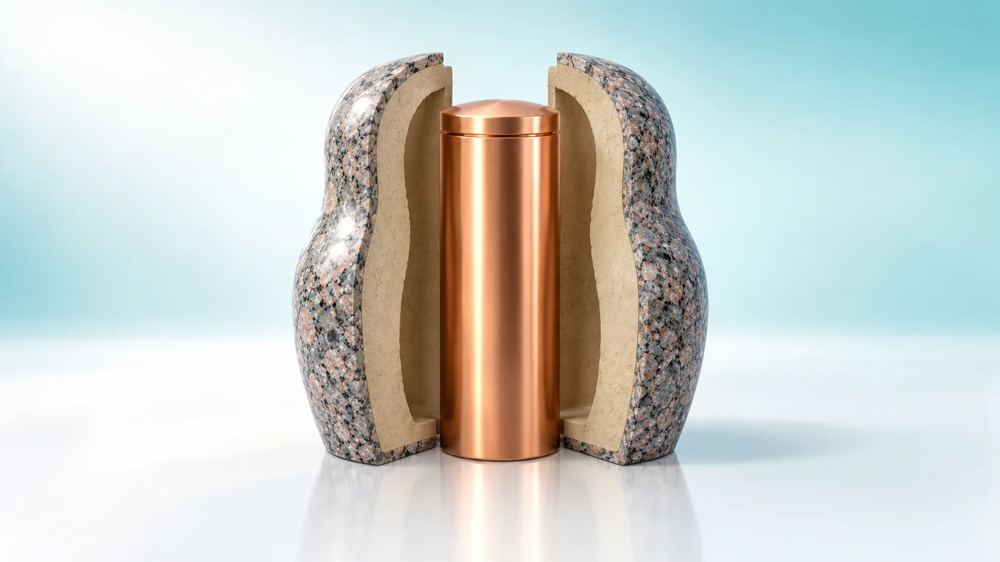
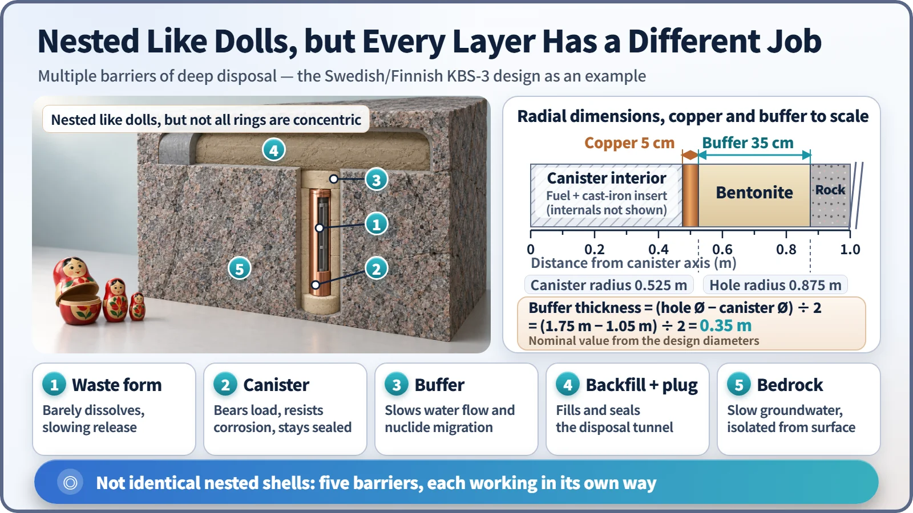
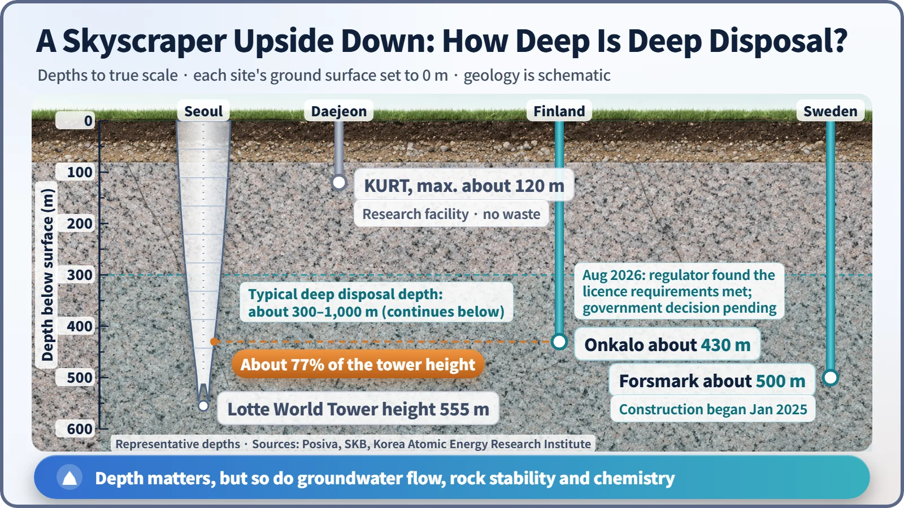

Society, Environment & the Future · 291
Nested Like Russian Dolls — What Is Deep Geological Disposal?
Fuel, copper canister, bentonite clay, backfilled tunnel and ancient bedrock: nested like dolls, but every layer has a different job, and none of them needs people to keep watch.

Deep geological disposal places high-level radioactive waste in stable bedrock several hundred meters underground, inside several barriers that each work in a different way. The aim is containment and isolation that stay in place even if nobody looks after the site, which is why the design relies on passive barriers rather than on people and pumps. [1]
Why not space, or the bottom of the sea?
"Why not just put it on a rocket and send it into space?" Whenever spent nuclear fuel comes up, someone asks that question. Others suggest sinking it to the bottom of the ocean. Neither is an option that has actually been adopted. Dumping any kind of radioactive waste at sea has been banned by an international treaty, the London Convention, since 1993. And launching it into space means a single rocket failure could scatter the cargo across the sky.
So the answer that many countries reached after decades of study is, perhaps surprisingly, right under our feet: deep underground.
Not burying it, but locking it away and keeping it apart
Deep geological disposal means placing high-level radioactive waste (waste with strong radioactivity and heat output, such as the spent fuel taken out of a reactor) inside solid bedrock several hundred meters below the surface. The depth is usually chosen somewhere in the 300–1,000 m range, depending on the country and its geology.
The International Atomic Energy Agency (IAEA) sums up what a disposal facility must do in two words: containment (keeping the radioactive material inside) and isolation (keeping it far away from the environment where people live). This is not something that only works as long as people watch it every day and keep pumps running. It is designed to stay safe even if nobody looks after it at all. [2]
People often mix up "storage" and "disposal." Dry storage casks hold spent fuel for decades under human supervision, on the assumption that it will be taken out again someday. Disposal is the final step: the waste stays in place permanently, with no plan to retrieve it. It is the difference between a left-luggage locker and the house you move into.
A doll inside a doll, but every doll has a different job
Open a Russian matryoshka doll and there is a smaller doll inside, then a smaller one inside that. Deep disposal is built much the same way. Here it is from the inside out, using the design shared by Sweden and Finland, called KBS-3. [3]
- The fuel itself: uranium oxide pellets baked like ceramic, which barely dissolve in water. This is the first doll.
- The canister: a tough cast-iron insert on the inside and 5 cm of pure copper on the outside, about 4.8 m long and 1.05 m in diameter. The cast iron withstands the pressure underground; the copper resists corrosion and keeps the seal intact.
- The buffer: compacted clay called bentonite wrapped around the canister. When it meets water it swells, filling any gaps, and it holds back water flow, greatly slowing the movement of radioactive substances.
- The backfill: the tunnel holding the canisters is packed tight with clay material and closed with a concrete plug.
- The bedrock: the last doll is granite made by nature. The rock at the Swedish disposal site has sat in place for some 1.9 billion years.

There are two ways this differs from a real matryoshka. First, the layers are not all concentric. The fuel, canister and buffer are nested inside the hole, but the backfill fills the tunnel above it, and the bedrock surrounds everything. Second, the dolls in a matryoshka are all the same shape. The barriers in deep disposal each work in a different way: not dissolving, resisting corrosion, blocking water, sealing the tunnel, and offering slow groundwater over long distances. So if one layer turns out weaker than expected, the others make up for it. It is the defense-in-depth principle of nuclear plants moved underground.
The buffer thickness comes from simple subtraction:
Buffer thickness = (hole diameter − canister diameter) ÷ 2 = (1.75 m − 1.05 m) ÷ 2 = 0.35 m
In other words, the canister is wrapped in a 35 cm clay blanket. And the safety assessment does not assume the canister will stay perfect forever. The Swedish assessment even examined a deliberately pessimistic case in which every canister has a 1 mm hole from day one. [4]
Why hundreds of meters down?
Going deep is about getting away from what happens at the surface: erosion by rain and rivers, ice ages that return every few tens of thousands of years, and even someone in the distant future digging into the ground without knowing what lies there.
Deep inside bedrock there is almost no oxygen, so copper hardly corrodes, and groundwater moves very slowly. That is why geological conditions matter as much as depth. Deeper is not automatically better. What you need is rock with few fractures, slow-moving water and stable chemistry.
How deep is that, really? The disposal level at Finland's repository is about 430 m down. Take South Korea's tallest building, the 555 m Lotte World Tower in Seoul, and push it into the ground upside down: that depth is roughly three-quarters of the way to its tip.

Where things stand now
| Site | Depth | Status |
|---|---|---|
| Onkalo, Finland | about 430 m | Trial run with dummy fuel in 2024; in August 2026 the regulator STUK stated that the operating licence requirements are met. The final decision rests with the government. |
| Forsmark, Sweden | about 500 m | Government approval in 2022; construction began in January 2025. About 6,000 canisters planned; disposal expected to start in about ten years. |
| KURT, South Korea | up to about 120 m | A granite research tunnel at the Korea Atomic Energy Research Institute in Daejeon, operating since 2006. It tests disposal technology and holds no real waste. |
In South Korea, a special act on high-level radioactive waste management was passed in 2025 and a management committee was launched; the country is preparing its site-selection process, and no site has been chosen yet. [5] [6] [7]
Back to the matryoshka
Deep disposal is not throwing waste into the ground. It is engineering that fits five barriers of very different character into stable bedrock hundreds of meters down, and the goal of the whole design is a state that stays safe even if people forget about it. How long it has to hold out is a big enough subject to deserve its own story.